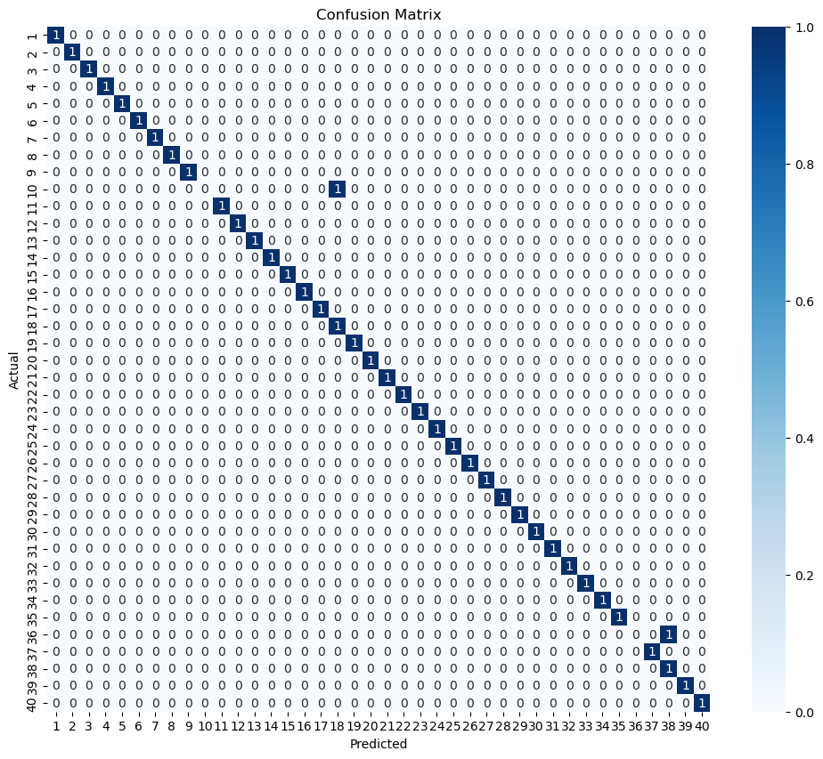
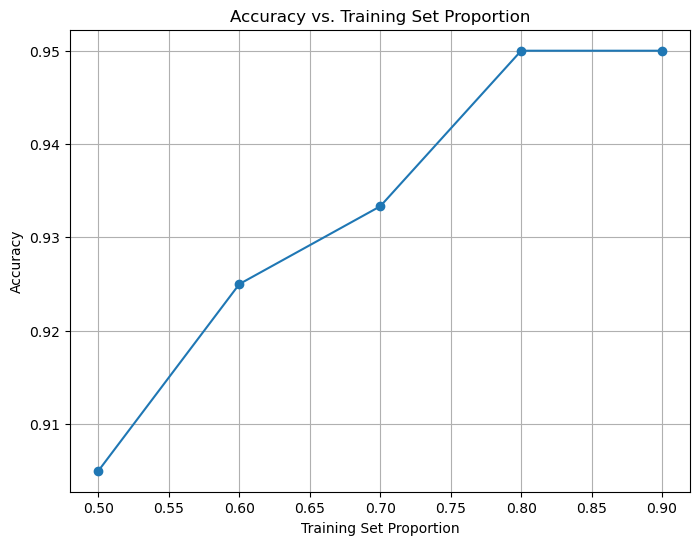

EIGENFACES · NOVEMBER 2024
Faces, in
fewer dimensions.
A classical approach to visual recognition.
I implemented an Eigenfaces workflow that uses principal component analysis to represent face images, then a nearest-neighbour classifier to recognise subjects in the ORL dataset. The project connects linear algebra, image reconstruction and model evaluation.
01 / THE QUESTION
How much of a face do we need to recognise it?
From pixels to a compact representation
Images contain many correlated pixel values. PCA finds directions of variation in the training data, allowing each face to be represented by a smaller set of coefficients. In this setting, those principal directions are called eigenfaces.
A controlled recognition task
The report uses the AT&T / ORL face dataset: 400 grayscale images, 40 subjects and 10 images per subject. The task is to classify held-out images among the enrolled subjects, with variations in expression, pose and accessories.
02 / THE WORKFLOW
Build a representation. Test what it retains.
- 01
Prepare the images
Load the grayscale face images, resize consistently and flatten each image into a vector.
- 02
Centre the data
Calculate the training mean face and subtract it so PCA models variations around a common reference.
- 03
Learn the eigenfaces
Apply PCA and inspect the scree and cumulative-variance curves to study the representation size.
- 04
Project and reconstruct
Project images into the learned space, reconstruct approximations and examine reconstruction error.
- 05
Classify with 1-NN
Assign each projected test image to the subject of its nearest training neighbour.
- 06
Analyse the errors
Inspect class-level metrics, the confusion matrix, misclassified pairs and different training proportions.
03 / THE REPRESENTATION
Recognition and reconstruction ask different questions.
z = UkT(x − μ)
x̂ = μ + Ukzx is a vectorised face image; μ is the training mean face; Uk contains k principal directions; z is the compact representation; x̂ is the reconstructed image.
x̂ = μ + Ukzx is a vectorised face image; μ is the training mean face; Uk contains k principal directions; z is the compact representation; x̂ is the reconstructed image.
Reconstruction
Projecting back into image space shows which visual information survives the compression. The report studies reconstruction quality and mean squared error as the number of components changes.
Recognition
A low reconstruction error does not by itself guarantee correct identification. The classifier must still distinguish neighbouring subjects in the projected space, so classification is evaluated separately.
04 / THE REPORTED RESULTS
Look beyond the headline accuracy.
The figures below are extracted directly from the November 2024 project report. They show the report’s results, rather than a new training run.


05 / REFLECTION
Linear algebra becomes a working vision pipeline.
What the project demonstrates
Image preprocessing, dimensionality reduction, nearest-neighbour classification and error analysis form one connected workflow. Visualising both reconstructions and mistakes helped me relate the mathematics to the model’s behaviour.
What I would evaluate next
Use repeated stratified splits, fit preprocessing and PCA only on training data, and report variability across runs. Broader tests would examine lighting shifts and include a rejection mechanism for people outside the enrolled dataset.
Source record
Face Recognition Using Eigenfaces, 14 November 2024, supplied as report.pdf. Dataset and preprocessing: pages 4–7; PCA and reconstruction: pages 7–15; classification and confusion matrix: pages 16–18; input-image demonstration and error analysis: pages 19–25.
The original report cites Turk and Pentland’s Eigenfaces work (1991) and the AT&T / ORL database. The displayed figures preserve the report’s original results. This page describes the input-image demonstration without claiming measured real-time latency.
EIGENFACES / RUIZHE XU